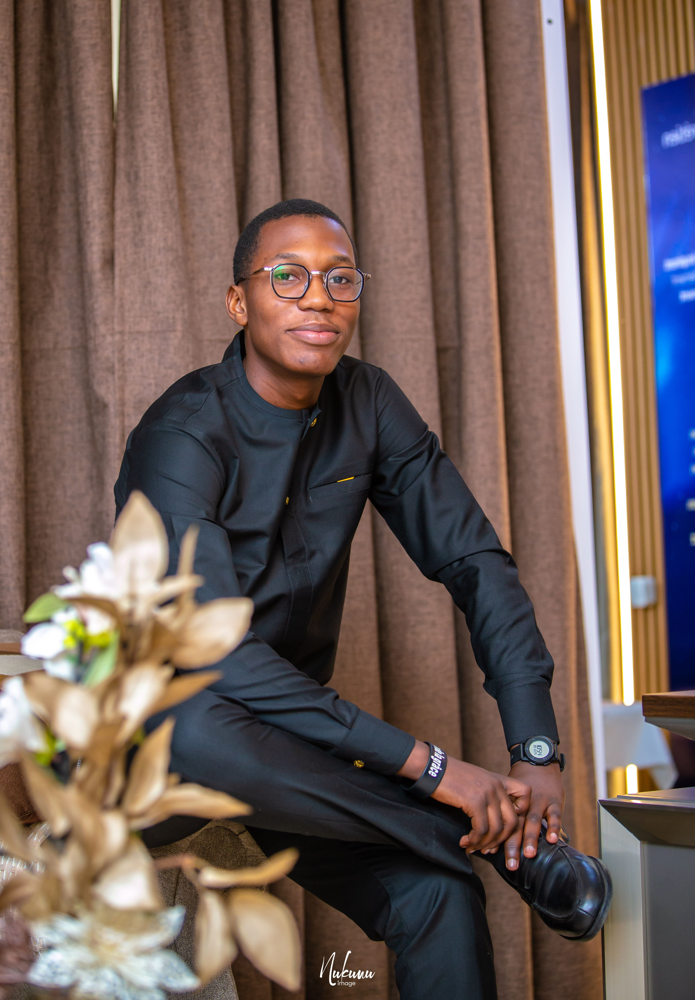

Développement web
Des interfaces claires, responsive et pensées pour l’utilisateur.
- HTML
- CSS
- JavaScript
- Responsive design
01 À propos

Ma démarche
Je m’intéresse aux outils qui rendent les idées plus accessibles : interfaces web rapides, automatisations bien pensées et fonctionnalités IA utiles.
Étudiant en 3ᵉ année de Bachelor Informatique à SUPINFO, je crée des solutions digitales en m’appuyant sur une pratique de terrain. Passionné par le développement web (HTML, CSS, JS, PHP, MySQL) et l’intelligence artificielle, je conçois des projets concrets, rigoureux et orientés valeur. Curieux et motivé, je cherche à contribuer à des initiatives innovantes.
Travaillons ensemble →Compétences
Des fondations concrètes pour imaginer, développer et faire évoluer des solutions digitales utiles.
Des interfaces claires, responsive et pensées pour l’utilisateur.
Des fonctionnalités et des données organisées pour des projets fiables.
Des projets IA appliqués à des besoins concrets et orientés valeur.
Formation
Des bases solides en informatique, enrichies par une spécialisation progressive en développement web et intelligence artificielle.
SUPINFO · Paris
EPSI · Paris
EPSI · Paris
BNC Academy · Paris
CLC Language · Lomé, Togo
Lycée International Cours Lumière · Lomé, Togo
Parcours
Création de projets et approfondissement des technologies web et d’intelligence artificielle.
Exploration de nouvelles façons d’intégrer l’IA dans des produits concrets.